本 Lab 可以说是 CSAPP 的几个 Lab 中最为人津津乐道的一个，对应知识点为书中的第 3 章（程序的机器级表示），要求使用 GDB 调试器，对汇编语言进行调试，从而得出正确的“拆弹密码”。共分为 6 个关卡和一个隐藏关卡，每个关卡都分别考察了一种语法结构或数据结构的汇编表示，部分关卡逻辑比较复杂，要求对 x86 汇编有一定的熟悉度。
bomb.c 1 2 3 4 5 6 7 8 9 10 11 12 13 14 15 16 17 18 19 20 21 22 23 24 25 26 27 28 29 30 31 32 33 34 35 36 37 38 39 40 41 42 43 44 45 46 47 48 49 50 51 52 53 54 55 56 57 58 59 60 61 62 63 64 65 66 67 68 69 70 71 72 73 74 75 76 77 78 79 80 int main (int argc, char *argv[]) { char *input; if (argc == 1 ) { infile = stdin ; } else if (argc == 2 ) { if (!(infile = fopen(argv[1 ], "r" ))) { printf ("%s: Error: Couldn't open %s\n" , argv[0 ], argv[1 ]); exit (8 ); } } else { printf ("Usage: %s [<input_file>]\n" , argv[0 ]); exit (8 ); } initialize_bomb(); printf ("Welcome to my fiendish little bomb. You have 6 phases with\n" ); printf ("which to blow yourself up. Have a nice day!\n" ); input = read_line(); phase_1(input); phase_defused(); printf ("Phase 1 defused. How about the next one?\n" ); input = read_line(); phase_2(input); phase_defused(); printf ("That's number 2. Keep going!\n" ); input = read_line(); phase_3(input); phase_defused(); printf ("Halfway there!\n" ); input = read_line(); phase_4(input); phase_defused(); printf ("So you got that one. Try this one.\n" ); input = read_line(); phase_5(input); phase_defused(); printf ("Good work! On to the next...\n" ); input = read_line(); phase_6(input); phase_defused(); return 0 ; }
首先观察 bomb.c 的 main 函数结构，最开始判断 argc 是否为 1，如果为 1，表示运行 bomb 程序时没有指定命令行参数，即从标准输入中读取 “拆弹密码”；否则，从指定的文件中读取。为了后续调试的方便，可以将所有的密码写入一个文件 ans.txt 中，后续在启动 bomb 程序时对其指定：./bomb ans.txt.
随后便是初始化“炸弹”，每次读取一行密码，利用该密码进行“拆弹”，如果正确，则进入下一关卡，否则，“炸弹”就会爆炸，“拆弹”失败。一次性输对 6 个密码后，“炸弹”就会被“拆除”。
注意最后的注释：
Wow, they got it! But isn’t something… missing? Perhaps something they overlooked? Mua ha ha ha ha!
一定程度上暗示了隐藏关卡的存在。
phase_1 每次拆弹时，可以使用 disas 命令进行反汇编，查看函数对应的汇编代码，以下是 disas phase_1 的结果：
1 2 3 4 5 6 7 8 0x0000000000400ee0 <+0>: sub $0x8,%rsp 0x0000000000400ee4 <+4>: mov $0x402400,%esi 0x0000000000400ee9 <+9>: call 0x401338 <strings_not_equal> 0x0000000000400eee <+14>: test %eax,%eax 0x0000000000400ef0 <+16>: je 0x400ef7 <phase_1+23> 0x0000000000400ef2 <+18>: call 0x40143a <explode_bomb> 0x0000000000400ef7 <+23>: add $0x8,%rsp 0x0000000000400efb <+27>: ret
热身关卡，代码的逻辑很简单，读取一行密码，判断该密码与事先指定的字符串是否相同，如果不相同，则“引爆炸弹”。
这里需要熟悉 x86 寄存器的使用惯例（也可以 GDB 自行调试），寄存器 %rdi 寄存器 %rsi 分别作为函数调用时的参数 1 和参数 2。在这里，%rdi 存储着读取到的密码字符串（准确来说，是字符串首字母的地址），而 %rsi 则被赋值为 0x402400，然后，将这两个地址作为参数 1 和参数 2，调用 string_not_equal，从函数名称上看，该函数用来判定两个字符串是否相同。那么思路就很清晰了，密码就是地址 0x402400 处的字符串值，使用 x/s 0x402400 查看即可。
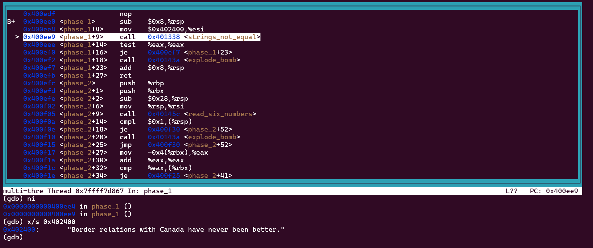
phase_2 1 2 3 4 5 6 7 8 9 10 11 12 13 14 15 16 17 18 19 20 21 22 23 24 25 0x0000000000400efc <+0>: push %rbp 0x0000000000400efd <+1>: push %rbx 0x0000000000400efe <+2>: sub $0x28,%rsp 0x0000000000400f02 <+6>: mov %rsp,%rsi 0x0000000000400f05 <+9>: call 0x40145c <read_six_numbers> 0x0000000000400f0a <+14>: cmpl $0x1,(%rsp) 0x0000000000400f0e <+18>: je 0x400f30 <phase_2+52> 0x0000000000400f10 <+20>: call 0x40143a <explode_bomb> 0x0000000000400f15 <+25>: jmp 0x400f30 <phase_2+52> 0x0000000000400f17 <+27>: mov -0x4(%rbx),%eax 0x0000000000400f1a <+30>: add %eax,%eax 0x0000000000400f1c <+32>: cmp %eax,(%rbx) 0x0000000000400f1e <+34>: je 0x400f25 <phase_2+41> 0x0000000000400f20 <+36>: call 0x40143a <explode_bomb> 0x0000000000400f25 <+41>: add $0x4,%rbx 0x0000000000400f29 <+45>: cmp %rbp,%rbx 0x0000000000400f2c <+48>: jne 0x400f17 <phase_2+27> 0x0000000000400f2e <+50>: jmp 0x400f3c <phase_2+64> 0x0000000000400f30 <+52>: lea 0x4(%rsp),%rbx 0x0000000000400f35 <+57>: lea 0x18(%rsp),%rbp 0x0000000000400f3a <+62>: jmp 0x400f17 <phase_2+27> 0x0000000000400f3c <+64>: add $0x28,%rsp 0x0000000000400f40 <+68>: pop %rbx 0x0000000000400f41 <+69>: pop %rbp 0x0000000000400f42 <+70>: ret
这一关主要是考察 循环语句 ，可以仔细阅读书中第 3.6.7 节，加强对汇编的循环结构的熟悉程度，如果感觉思路很乱，可以采用与书中类似的方法：先将汇编翻译为等价的带 goto 的高级语言，再参考几种典型的循环形式，将 goto 改写为循环结构，以下便是最终翻译得到的类 C 语言伪代码：
1 2 3 4 5 6 7 8 9 10 11 12 13 read_six_numbers(); if (Mem[%rsp] != 1) { explode_bomb(); } for (%rbx = %rsp + 4, %rbp = %rsp + 24; %rbx != %rbp; %rbx += 4) { %eax = Mem[%rbx - 4]; // 上一个元素 %eax *= 2; if (Mem[%rbx] != %eax) { explode_bomb(); } }
首先注意到 read_six_numbers() 函数，字面意思是读取 6 个数字，推测密码由 6 个数字组成。
然后判断 Mem[%rsp] 的值是否为 1，不是则“爆炸”。这里可以善用 GDB，先随便蒙 6 个数字，然后使用 p/x 打印 Mem[%rsp] 的值，发现其值正好等于输入的第一个数字，结合后面的 6 次循环可知，输入的第 i （i 从 0 开始）个数字存储在地址 %rsp + 4 * i 处，且每个数字都必须为它前一个数字的两倍。
那么代码逻辑便理清楚了：输入的第一个数字为 1，其后每一个数字都为前一个数字的两倍，密码为：1 2 4 8 16 32.
phase_3 1 2 3 4 5 6 7 8 9 10 11 12 13 14 15 16 17 18 19 20 21 22 23 24 25 26 27 28 29 30 31 32 33 34 35 36 0x0000000000400f43 <+0>: sub $0x18,%rsp 0x0000000000400f47 <+4>: lea 0xc(%rsp),%rcx 0x0000000000400f4c <+9>: lea 0x8(%rsp),%rdx 0x0000000000400f51 <+14>: mov $0x4025cf,%esi 0x0000000000400f56 <+19>: mov $0x0,%eax 0x0000000000400f5b <+24>: call 0x400bf0 <__isoc99_sscanf@plt> 0x0000000000400f60 <+29>: cmp $0x1,%eax 0x0000000000400f63 <+32>: jg 0x400f6a <phase_3+39> 0x0000000000400f65 <+34>: call 0x40143a <explode_bomb> 0x0000000000400f6a <+39>: cmpl $0x7,0x8(%rsp) 0x0000000000400f6f <+44>: ja 0x400fad <phase_3+106> 0x0000000000400f71 <+46>: mov 0x8(%rsp),%eax 0x0000000000400f75 <+50>: jmp *0x402470(,%rax,8) 0x0000000000400f7c <+57>: mov $0xcf,%eax 0x0000000000400f81 <+62>: jmp 0x400fbe <phase_3+123> 0x0000000000400f83 <+64>: mov $0x2c3,%eax 0x0000000000400f88 <+69>: jmp 0x400fbe <phase_3+123> 0x0000000000400f8a <+71>: mov $0x100,%eax 0x0000000000400f8f <+76>: jmp 0x400fbe <phase_3+123> 0x0000000000400f91 <+78>: mov $0x185,%eax 0x0000000000400f96 <+83>: jmp 0x400fbe <phase_3+123> 0x0000000000400f98 <+85>: mov $0xce,%eax 0x0000000000400f9d <+90>: jmp 0x400fbe <phase_3+123> 0x0000000000400f9f <+92>: mov $0x2aa,%eax 0x0000000000400fa4 <+97>: jmp 0x400fbe <phase_3+123> 0x0000000000400fa6 <+99>: mov $0x147,%eax 0x0000000000400fab <+104>: jmp 0x400fbe <phase_3+123> 0x0000000000400fad <+106>: call 0x40143a <explode_bomb> 0x0000000000400fb2 <+111>: mov $0x0,%eax 0x0000000000400fb7 <+116>: jmp 0x400fbe <phase_3+123> 0x0000000000400fb9 <+118>: mov $0x137,%eax 0x0000000000400fbe <+123>: cmp 0xc(%rsp),%eax 0x0000000000400fc2 <+127>: je 0x400fc9 <phase_3+134> 0x0000000000400fc4 <+129>: call 0x40143a <explode_bomb> 0x0000000000400fc9 <+134>: add $0x18,%rsp 0x0000000000400fcd <+138>: ret
这一关的代码量比较大，但是中间一段看起来很有规律，尤其注意这一句：jmp *0x402470(, %rax, 8)，直接根据 %rax 寄存器的值计算偏移量进行跳转，这便是 switch 语句 所采用的跳转方式，地址 0x402470 即跳转表的首地址。
另外，还需要关注的一条指令是 call 0x400bf0 <__isoc99_sscanf@plt>，貌似是一个函数调用指令，以下是我借助大语言模型得到的解释：
__isoc99_sscanf@plt 是一个指向 sscanf 函数的 PLT（Procedure Linkage Table）入口点的符号引用。sscanf 函数是 C 语言标准库中的一个函数，用于从输入流中按照指定格式读取数据。@plt 表示这是一个通过动态链接的程序跳转表（Procedure Linkage Table）来调用的函数。
参数传递 在 x86-64 架构中，函数参数通常是通过寄存器传递的。对于 sscanf 函数，它的参数如下：
%rdi：第一个参数，通常是文件描述符或指针类型。对于 sscanf，这是指向输入字符串的指针。%rsi：第二个参数，指向格式化字符串的指针。%rdx：第三个参数，如果有的话，指向第一个要填充的变量的地址。更多的参数会继续使用后续的寄存器 %rcx, %r8, 和 %r9。如果参数超过六个，那么它们将会通过栈传递。
返回值 在 x86-64 架构中，返回值会被放在 %rax 寄存器中。sscanf 返回成功匹配和赋值的项数，如果没有任何匹配，则返回零。如果输入结束前格式化字符串就被耗尽了，也返回零。如果遇到任何读取错误（如读取一个整数但输入不是有效的整数），则返回负数。
简而言之，sscanf 类似于 scanf，只是输入从标准输入变成了指定的字符串。在这里，sscanf 指定了 4 个参数，作用为：从 %rdi 寄存器指向的字符串中进行读取，%rsi 指向格式化字符串，%rdx 和 %rcx 分别指向被格式化读取到的变量 1 和变量 2. 若读取成功，则返回成功读取的项数，即为 2，存入 %rax 寄存器中。
查看 0x4025cf 处的字符串，即格式化字符串，为 %d %d，说明读取的两个值都为十进制整数，即本关密码的形式。
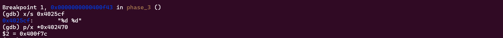
最后查看一下整张跳转表的值，根据最终跳转到的位置确定输入的值。
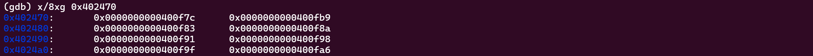
然后将其改写为 switch 语句，下面直接给出完整代码的翻译结果：
1 2 3 4 5 6 7 8 9 10 11 12 13 14 15 16 17 18 19 20 21 22 23 24 25 26 27 28 29 30 31 32 33 34 35 36 %rcx = %rsp + 12; %rdx = %rsp + 8; %esi = 0x4025cf; %eax = 0; sscanf(%rdi, %rsi, %rdx, %rcx); if (%eax <= 1) { // 读取成功的值个数小于2 explode_bomb(); } if (Mem[%rsp + 8] > 7u) { // 读取到的（输入的）第一个值大于7或小于0 explode_bomb(); } %eax = Mem[%rsp + 8]; switch (%rax) { case 0: %eax = 0xcf; break; case 1: %eax = 0x137; break; case 2: %eax = 0x2c3; break; case 3: %eax = 0x100; break; case 4: %eax = 0x185; break; case 5: %eax = 0xce; break; case 6: %eax = 0x2aa; break; case 7: %eax = 0x147; break; } // 输入的第二个值等于%eax寄存器的值 if (%eax != Mem[%rsp + 12]) { explode_bomb(); }
要使得 %eax 的值等于输入的第二个值，只需要保证输入的第一个值经过 switch 语句选择之后，赋值正好等于输入的第二个值。
因此本关的答案并不是固定的，0 207、 3 256 等等都是正确答案。注意不能写成 0 0xcf、3 0x100，因为输入格式为十进制整数，需要将十六进制进行转换。
phase_4 1 2 3 4 5 6 7 8 9 10 11 12 13 14 15 16 17 18 19 20 21 22 0x000000000040100c <+0>: sub $0x18,%rsp 0x0000000000401010 <+4>: lea 0xc(%rsp),%rcx 0x0000000000401015 <+9>: lea 0x8(%rsp),%rdx 0x000000000040101a <+14>: mov $0x4025cf,%esi 0x000000000040101f <+19>: mov $0x0,%eax 0x0000000000401024 <+24>: call 0x400bf0 <__isoc99_sscanf@plt> 0x0000000000401029 <+29>: cmp $0x2,%eax 0x000000000040102c <+32>: jne 0x401035 <phase_4+41> 0x000000000040102e <+34>: cmpl $0xe,0x8(%rsp) 0x0000000000401033 <+39>: jbe 0x40103a <phase_4+46> 0x0000000000401035 <+41>: call 0x40143a <explode_bomb> 0x000000000040103a <+46>: mov $0xe,%edx 0x000000000040103f <+51>: mov $0x0,%esi 0x0000000000401044 <+56>: mov 0x8(%rsp),%edi 0x0000000000401048 <+60>: call 0x400fce <func4> 0x000000000040104d <+65>: test %eax,%eax 0x000000000040104f <+67>: jne 0x401058 <phase_4+76> 0x0000000000401051 <+69>: cmpl $0x0,0xc(%rsp) 0x0000000000401056 <+74>: je 0x40105d <phase_4+81> 0x0000000000401058 <+76>: call 0x40143a <explode_bomb> 0x000000000040105d <+81>: add $0x18,%rsp 0x0000000000401061 <+85>: ret
这一关主要分成两个函数：phase_4 和 func_4，首先查看 phase_4，代码前一段和 phase_3 非常类似：读取两个整数，且保证输入的第一个值位于区间 [0, 15) 内。
1 2 3 4 5 6 7 8 9 10 11 12 13 14 15 16 17 18 19 20 21 22 %rcx = %rsp + 12; %rdx = %rsp + 8; %esi = 0x4025cf; %eax = 0; sscanf(%rdi, %rsi, %rdx, %rcx); if (%eax != 2) { explode_bomb(); } if (Mem[%rsp + 8] >= 15u) { explode_bomb(); } %edx = 0xe; %esi = 0; %edi = Mem[%rsp + 8]; func4(%rdi, %rsi, %rdx); // func4(Mem[%rsp+8], 0, 14) if (%eax != 0) { explode_bomb(); } if (Mem[%rsp + 12] != 0) { explode_bomb(); }
后一段便是传递 3 个参数给函数 func_4 进行调用，需要保证返回值和输入的第二个数为 0，因此密码的第二个数为 0。可以看到，phase_4 的代码结构还是很简单易懂的，关键是对 func_4 函数的分析。
1 2 3 4 5 6 7 8 9 10 11 12 13 14 15 16 17 18 19 20 21 22 0x0000000000400fce <+0>: sub $0x8,%rsp 0x0000000000400fd2 <+4>: mov %edx,%eax 0x0000000000400fd4 <+6>: sub %esi,%eax 0x0000000000400fd6 <+8>: mov %eax,%ecx 0x0000000000400fd8 <+10>: shr $0x1f,%ecx 0x0000000000400fdb <+13>: add %ecx,%eax 0x0000000000400fdd <+15>: sar %eax 0x0000000000400fdf <+17>: lea (%rax,%rsi,1),%ecx 0x0000000000400fe2 <+20>: cmp %edi,%ecx 0x0000000000400fe4 <+22>: jle 0x400ff2 <func4+36> 0x0000000000400fe6 <+24>: lea -0x1(%rcx),%edx 0x0000000000400fe9 <+27>: call 0x400fce <func4> 0x0000000000400fee <+32>: add %eax,%eax 0x0000000000400ff0 <+34>: jmp 0x401007 <func4+57> 0x0000000000400ff2 <+36>: mov $0x0,%eax 0x0000000000400ff7 <+41>: cmp %edi,%ecx 0x0000000000400ff9 <+43>: jge 0x401007 <func4+57> 0x0000000000400ffb <+45>: lea 0x1(%rcx),%esi 0x0000000000400ffe <+48>: call 0x400fce <func4> 0x0000000000401003 <+53>: lea 0x1(%rax,%rax,1),%eax 0x0000000000401007 <+57>: add $0x8,%rsp 0x000000000040100b <+61>: ret
仔细观察 func_4 的代码，发现含有对 func_4 的调用，因此 func_4 是一个 递归 函数。在对递归函数进行翻译时，本质上与普通的函数并没有区别，结果如下：
1 2 3 4 5 6 7 8 9 10 11 12 13 14 15 16 17 18 19 20 21 int func4 (int a, int b, int c) { int res = c - b; int temp = (unsigned )res >> 31 ; res += temp; res >>= 1 ; temp = b + res; if (temp > a) { c = temp - 1 ; res = func4(a, b, c); res *= 2 ; } else { res = 0 ; if (temp < a) { b = temp + 1 ; res = func4(a, b, c); res = 2 * res + 1 ; } } return res; }
可以看到，程序的逻辑还是比较复杂的，但是注意到参数 b 和 c 的值都是确定的，真正的变量只有参数 a。因此这里有一个偷懒的办法：将程序翻译为一个语法严格正确的高级语言程序（而不是之前的伪代码），然后枚举所有可能的 a（只有 15 中情况），运行测试即可，结果为 0 的即为满足要求的值，也就是密码的第一个数。
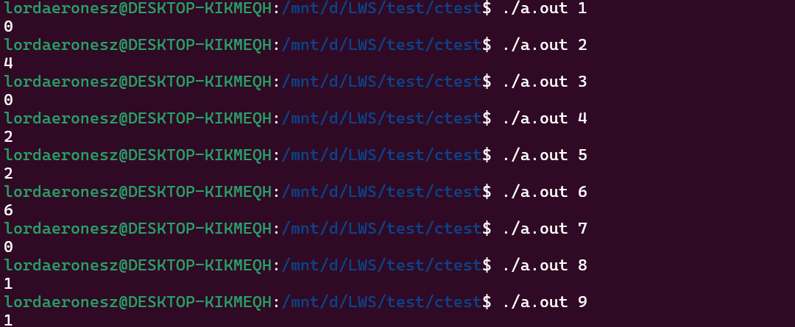
可见，本关的正解同样不止一个，1 0、3 0、7 0 都是正确答案。
phase_5 1 2 3 4 5 6 7 8 9 10 11 12 13 14 15 16 17 18 19 20 21 22 23 24 25 26 27 28 29 30 31 32 33 34 35 36 37 38 0x0000000000401062 <+0>: push %rbx 0x0000000000401063 <+1>: sub $0x20,%rsp 0x0000000000401067 <+5>: mov %rdi,%rbx 0x000000000040106a <+8>: mov %fs:0x28,%rax 0x0000000000401073 <+17>: mov %rax,0x18(%rsp) 0x0000000000401078 <+22>: xor %eax,%eax 0x000000000040107a <+24>: call 0x40131b <string_length> 0x000000000040107f <+29>: cmp $0x6,%eax 0x0000000000401082 <+32>: je 0x4010d2 <phase_5+112> 0x0000000000401084 <+34>: call 0x40143a <explode_bomb> 0x0000000000401089 <+39>: jmp 0x4010d2 <phase_5+112> 0x000000000040108b <+41>: movzbl (%rbx,%rax,1),%ecx 0x000000000040108f <+45>: mov %cl,(%rsp) 0x0000000000401092 <+48>: mov (%rsp),%rdx 0x0000000000401096 <+52>: and $0xf,%edx 0x0000000000401099 <+55>: movzbl 0x4024b0(%rdx),%edx 0x00000000004010a0 <+62>: mov %dl,0x10(%rsp,%rax,1) 0x00000000004010a4 <+66>: add $0x1,%rax 0x00000000004010a8 <+70>: cmp $0x6,%rax 0x00000000004010ac <+74>: jne 0x40108b <phase_5+41> 0x00000000004010ae <+76>: movb $0x0,0x16(%rsp) 0x00000000004010b3 <+81>: mov $0x40245e,%esi 0x00000000004010b8 <+86>: lea 0x10(%rsp),%rdi 0x00000000004010bd <+91>: call 0x401338 <strings_not_equal> 0x00000000004010c2 <+96>: test %eax,%eax 0x00000000004010c4 <+98>: je 0x4010d9 <phase_5+119> 0x00000000004010c6 <+100>: call 0x40143a <explode_bomb> 0x00000000004010cb <+105>: nopl 0x0(%rax,%rax,1) 0x00000000004010d0 <+110>: jmp 0x4010d9 <phase_5+119> 0x00000000004010d2 <+112>: mov $0x0,%eax 0x00000000004010d7 <+117>: jmp 0x40108b <phase_5+41> 0x00000000004010d9 <+119>: mov 0x18(%rsp),%rax 0x00000000004010de <+124>: xor %fs:0x28,%rax 0x00000000004010e7 <+133>: je 0x4010ee <phase_5+140> 0x00000000004010e9 <+135>: call 0x400b30 <__stack_chk_fail@plt> 0x00000000004010ee <+140>: add $0x20,%rsp 0x00000000004010f2 <+144>: pop %rbx 0x00000000004010f3 <+145>: ret
这一关的汇编代码逻辑不算复杂，我们主要关注翻译后的代码：
1 2 3 4 5 6 7 8 9 10 11 12 13 14 15 16 17 18 19 20 21 22 23 %rbx = %rdi; Mem[%rsp + 0x18] = Mem[%fs + 0x28]; // 4Byte %eax ^= %eax; // %eax = 0 if (string_length() != 6) { explode_bomb(); } for (%eax = 0; %eax != 6; ++%eax) { %edx = Mem[%rbx + %rax] & 0xf; Mem[%rsp + %rax + 0x10] = Mem[0x4024b0 + %rdx]; // 1Byte } Mem[%rsp + 0x16] = 0; %esi = 0x40245e; %rdi = %rsp + 0x10; if (string_not_equal(%rdi, %esi) != 0) { explode_bomb(); } %rax = Mem[%rsp + 0x18] ^ Mem[%fs + 0x28]; if (%rax != 0) { __stack_chk_fail(); }
从 if (string_length() != 6) explode_bomb(); 可以看出密码是一个长度为 6 的字符串，随后的 for 循环遍历字符串的各个字符，提取低一字节的值 %edx，将其作为相对于地址 0x4024b0 的偏移量，读取目标地址 0x4020b0 + %rdx 处的低 4 位数据，存入地址 %rsp + %rax + 0x10 处，构造出一个起始地址为 %rsp + 0x10 的长度为 6 的字符串。然后将起始地址为 %rsp + 0x10 的字符串与起始地址为 0x40245e 的字符串作比较，如果不相同，则“引爆炸弹”。最后进行缓冲区溢出检测，如果溢出，则调用 __stack_chk_fail().
经过以上的描述，不难看出输入的 6 位字符串其实是一个相对于数组 0x4024b0 的索引，只不过索引值不直接给出，而是等于字符的低 4 位值。本关的目标便是使得输入的 6 位索引经过映射之后得到的字符串正好等于地址 0x40245e 的字符串，即 \”flyers\”.
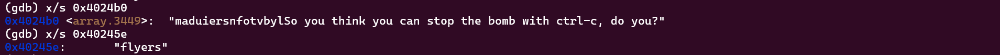
以字符 f 为例，f 在 array 表中的（最小）索引为 9，而所有低 4 位等于 9（1001）的字符都满足条件，例如 i .
字符c1
索引
字符c2
f
9
i
l
15
o
y
14
n
e
5
e
r
6
f
s
7
g
依次类推，一个满足条件的密码为：ionefg .
phase_6 最复杂的一关，代码量非常大，而且逻辑比较复杂，整体观察比较困难，可以先将代码按照循环块拆分为几个部分，依次进行分析。
在使用 GDB 调试的时候，可以为每个块的起始部分分别打上断点，同时为了调试的方便，可将这些命令写入 .gdbinit 中。
1 2 3 4 5 6 b phase_6 b *0x401153 b *0x40116f b *0x4011ab b *0x4011d2 r ./ans.txt
block_1 1 2 3 4 5 6 7 8 9 10 11 12 13 14 15 16 17 18 19 20 21 22 23 24 25 26 27 28 29 30 31 0x00000000004010f4 <+0>: push %r14 0x00000000004010f6 <+2>: push %r13 0x00000000004010f8 <+4>: push %r12 0x00000000004010fa <+6>: push %rbp 0x00000000004010fb <+7>: push %rbx 0x00000000004010fc <+8>: sub $0x50,%rsp 0x0000000000401100 <+12>: mov %rsp,%r13 0x0000000000401103 <+15>: mov %rsp,%rsi 0x0000000000401106 <+18>: call 0x40145c <read_six_numbers> 0x000000000040110b <+23>: mov %rsp,%r14 0x000000000040110e <+26>: mov $0x0,%r12d 0x0000000000401114 <+32>: mov %r13,%rbp 0x0000000000401117 <+35>: mov 0x0(%r13),%eax 0x000000000040111b <+39>: sub $0x1,%eax 0x000000000040111e <+42>: cmp $0x5,%eax 0x0000000000401121 <+45>: jbe 0x401128 <phase_6+52> 0x0000000000401123 <+47>: call 0x40143a <explode_bomb> 0x0000000000401128 <+52>: add $0x1,%r12d 0x000000000040112c <+56>: cmp $0x6,%r12d 0x0000000000401130 <+60>: je 0x401153 <phase_6+95> 0x0000000000401132 <+62>: mov %r12d,%ebx 0x0000000000401135 <+65>: movslq %ebx,%rax 0x0000000000401138 <+68>: mov (%rsp,%rax,4),%eax 0x000000000040113b <+71>: cmp %eax,0x0(%rbp) 0x000000000040113e <+74>: jne 0x401145 <phase_6+81> 0x0000000000401140 <+76>: call 0x40143a <explode_bomb> 0x0000000000401145 <+81>: add $0x1,%ebx 0x0000000000401148 <+84>: cmp $0x5,%ebx 0x000000000040114b <+87>: jle 0x401135 <phase_6+65> 0x000000000040114d <+89>: add $0x4,%r13 0x0000000000401151 <+93>: jmp 0x401114 <phase_6+32>
第一部分整体而言不算太复杂，直接查看翻译后的代码：
1 2 3 4 5 6 7 8 9 10 11 12 13 14 15 16 17 18 19 20 21 22 23 // 读取6个4Byte数字放入从%r14寄存器指向地址开始的内存空间中 %r13 = %rsp; %rsi = %rsp; read_six_numbers(); %r14 = %rsp; for (%r12d = 0; %r12 != 6; ) { %rbp = %r13; %eax = Mem[%r13]; %eax -= 1; if (%eax > 5u) { explode_bomb(); } %r12d += 1; if (%r12d == 6) break; for (%ebx = %r12d; %ebx <= 5; ++%ebx) { %rax = %ebx; // 符号扩展 %eax = Mem[4 * %rax + %rsp]; if (Mem[%rbp] == %eax) { explode_bomb(); } } %r13 += 4; }
与 phase_2 类似，首先读取 6 个数字，确定密码由 6 个数字组成。
随后主要关注循环中导致触发 explode_bomb 的条件，这些条件指明了密码的限定范围。第一个是 %eax > 5u，注意前一条指令是 %eax 自减一，因此可以确定 6 个数字的范围都是 [1, 6].
这里自减一很有意思，刚开始看可能以为是多此一举，直接判断 %eax 是否大于 6u 不就完了吗？但是考虑到 0 这个特例，它在自减一后得到 -1，而 -1 满足无符号比较大于 5u，因此被排除在外。如果直接判断 %eax 是否大于 6u，那么数字的限定范围就变成了 [0, 6].
后面的内层循环不难看出是用来判重的，因此六个数字的范围得以确定：每个数字都位于区间 [1, 6] 内且无重复数字。
block_2 1 2 3 4 5 6 7 8 9 0x0000000000401153 <+95>: lea 0x18(%rsp),%rsi 0x0000000000401158 <+100>: mov %r14,%rax 0x000000000040115b <+103>: mov $0x7,%ecx 0x0000000000401160 <+108>: mov %ecx,%edx 0x0000000000401162 <+110>: sub (%rax),%edx 0x0000000000401164 <+112>: mov %edx,(%rax) 0x0000000000401166 <+114>: add $0x4,%rax 0x000000000040116a <+118>: cmp %rsi,%rax 0x000000000040116d <+121>: jne 0x401160 <phase_6+108>
1 2 3 4 5 6 7 // %r14 = %rsp // 遍历6个数字，每个数字num的值变为7-num %ecx = 7; for (%rax = %r14, %rsi = %rsp + 0x18; %rax != %rsi; %rax += 4) { %edx = %ecx - Mem[%rax]; Mem[%rax] = %edx; }
第二部分非常简单，遍历输入的 6 个数字，将每个数字 num 更改为 7 - num.
block_3 1 2 3 4 5 6 7 8 9 10 11 12 13 14 15 16 17 18 0x000000000040116f <+123>: mov $0x0,%esi 0x0000000000401174 <+128>: jmp 0x401197 <phase_6+163> 0x0000000000401176 <+130>: mov 0x8(%rdx),%rdx 0x000000000040117a <+134>: add $0x1,%eax 0x000000000040117d <+137>: cmp %ecx,%eax 0x000000000040117f <+139>: jne 0x401176 <phase_6+130> 0x0000000000401181 <+141>: jmp 0x401188 <phase_6+148> 0x0000000000401183 <+143>: mov $0x6032d0,%edx 0x0000000000401188 <+148>: mov %rdx,0x20(%rsp,%rsi,2) 0x000000000040118d <+153>: add $0x4,%rsi 0x0000000000401191 <+157>: cmp $0x18,%rsi 0x0000000000401195 <+161>: je 0x4011ab <phase_6+183> 0x0000000000401197 <+163>: mov (%rsp,%rsi,1),%ecx 0x000000000040119a <+166>: cmp $0x1,%ecx 0x000000000040119d <+169>: jle 0x401183 <phase_6+143> 0x000000000040119f <+171>: mov $0x1,%eax 0x00000000004011a4 <+176>: mov $0x6032d0,%edx 0x00000000004011a9 <+181>: jmp 0x401176 <phase_6+130>
第三部分虽然代码量不大，但是跳转语句很多，逻辑非常复杂。这里我采用了分部的方式，首先改写为带 goto 语句的高级语言伪代码：
1 2 3 4 5 6 7 8 9 10 11 12 13 14 15 16 17 18 19 %esi = 0; goto phase_6_163; phase_6_130: %rdx = Mem[%rdx + 0x8]; %eax += 1; if (%eax != %ecx) goto phase_6_130; goto phase_6_148; phase_6_143: %edx = 0x6032d0; phase_6_148: Mem[%rsp + 2 * %rsi + 0x20] = %rdx; %rsi += 4; if (%rsi == 0x18) goto phase_6_183; phase_6_163: %ecx = Mem[%rsp + %rsi]; if (%ecx <= 1) goto phase_6_143; %eax = 1; %edx = 0x6032d0; goto phase_6_130;
然后对照一些常见的形式 goto 改写为循环语句，这里的翻译过程比较繁琐，需要静下来仔细思考。
1 2 3 4 5 6 7 8 9 10 11 12 13 14 15 16 17 %esi = 0; while (%rsi != 0x18) { %ecx = Mem[%rsp + %rsi]; if (%ecx > 1) { %eax = 1; %rdx = 0x6032d0; while (%eax != %ecx) { %rdx = Mem[%rdx + 0x8]; %eax += 1; } } else { %edx = 0x6032d0; } Mem[%rsp + 2 * %rsi + 0x20] = %rdx; %rsi += 4; }
观察翻译后的代码，似乎和 phase_5 类似，遍历每个数字，并将每个数字当作索引 i，在起始地址为 0x6032d0 的表中查找第 i 个元素，以 %rsp + 0x20 作为起始地址创建一个线性结构。
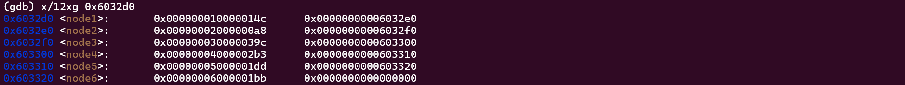
打印起始地址为 0x6032d0 的 12 个 8 字节数据，可以看到第二列中表示的值就是某一行的地址，且这些地址正好可以串联成一个线性结构，加上符号名 \”node\” 的提示，是不是很熟悉？没错，就是 链表 。上图每一行的第一列为值域，第二列为 next 域。
回过来观察代码，第三部分的作用就是将输入的六个数字作为索引，创建一个数组，每个数组元素都为索引对应的 next 域。
block_4 1 2 3 4 5 6 7 8 9 10 11 0x00000000004011ab <+183>: mov 0x20(%rsp),%rbx 0x00000000004011b0 <+188>: lea 0x28(%rsp),%rax 0x00000000004011b5 <+193>: lea 0x50(%rsp),%rsi 0x00000000004011ba <+198>: mov %rbx,%rcx 0x00000000004011bd <+201>: mov (%rax),%rdx 0x00000000004011c0 <+204>: mov %rdx,0x8(%rcx) 0x00000000004011c4 <+208>: add $0x8,%rax 0x00000000004011c8 <+212>: cmp %rsi,%rax 0x00000000004011cb <+215>: je 0x4011d2 <phase_6+222> 0x00000000004011cd <+217>: mov %rdx,%rcx 0x00000000004011d0 <+220>: jmp 0x4011bd <phase_6+201>
1 2 3 4 5 6 7 8 9 // 创建链表 %rbx = Mem[%rsp + 0x20]; for (%rax = %rsp + 0x28, %rsi = %rsp + 0x50; ; %rcx = %rdx) { %rcx = %rbx; %rdx = Mem[%rax]; Mem[%rcx + 8] = %rdx; %rax += 8; if (%rax == %rsi) break; }
理解清楚了第三部分，第四部分的作用就很明显了：根据第三部分创建的由 next 域构成的数组，创建一个链表结构。
block_5 1 2 3 4 5 6 7 8 9 10 11 12 13 14 15 16 17 0x00000000004011d2 <+222>: movq $0x0,0x8(%rdx) 0x00000000004011da <+230>: mov $0x5,%ebp 0x00000000004011df <+235>: mov 0x8(%rbx),%rax 0x00000000004011e3 <+239>: mov (%rax),%eax 0x00000000004011e5 <+241>: cmp %eax,(%rbx) 0x00000000004011e7 <+243>: jge 0x4011ee <phase_6+250> 0x00000000004011e9 <+245>: call 0x40143a <explode_bomb> 0x00000000004011ee <+250>: mov 0x8(%rbx),%rbx 0x00000000004011f2 <+254>: sub $0x1,%ebp 0x00000000004011f5 <+257>: jne 0x4011df <phase_6+235> 0x00000000004011f7 <+259>: add $0x50,%rsp 0x00000000004011fb <+263>: pop %rbx 0x00000000004011fc <+264>: pop %rbp 0x00000000004011fd <+265>: pop %r12 0x00000000004011ff <+267>: pop %r13 0x0000000000401201 <+269>: pop %r14 0x0000000000401203 <+271>: ret
1 2 3 4 5 6 7 8 9 10 // 遍历链表，判断是否从大到小排序，若不是，则引爆 Mem[%rdx + 8] = 0; for (%ebp = 5; %ebp != 0; --%ebp) { %rax = Mem[%rbx + 8]; %eax = Mem[%rax]; if (Mem[%rbx] < %eax) { explode_bomb(); } %rbx = Mem[%rbx + 8]; }
终于到最后一部分了，这一部分的作用很明显：判断链表是否有序，更准确地说，是否以非递增顺序排列。
那么本关的目标终于浮出水面了：
输入六个数字，对于每个数字 num，将 7 - num 作为索引，根据链表 node 重构出一个新的链表，并保证重构的链表按非递增顺序排列。
注意链表值域的比较只关注低 4 字节，因此链表各结点值域从大到小排序为：3 4 5 6 1 2，那么对应的输入数字为：4 3 2 1 6 5，即本关的正确答案。
secret_phase 解决隐藏关卡首先要解决的问题是：如何进入？观察 main 函数的汇编代码，在结束 phase_6 之后、main 函数返回之前，只有 phase_defused 函数被调用，看来入口可能隐藏在一直以来被忽略的部分。
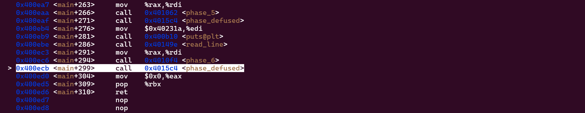
对 phase_defused 进行反汇编，结果如下：
1 2 3 4 5 6 7 8 9 10 11 12 13 14 15 16 17 18 19 20 21 22 23 24 25 26 27 28 29 30 31 32 33 0x00000000004015c4 <+0>: sub $0x78,%rsp 0x00000000004015c8 <+4>: mov %fs:0x28,%rax 0x00000000004015d1 <+13>: mov %rax,0x68(%rsp) 0x00000000004015d6 <+18>: xor %eax,%eax 0x00000000004015d8 <+20>: cmpl $0x6,0x202181(%rip) # 0x603760 <num_input_strings> 0x00000000004015df <+27>: jne 0x40163f <phase_defused+123> 0x00000000004015e1 <+29>: lea 0x10(%rsp),%r8 0x00000000004015e6 <+34>: lea 0xc(%rsp),%rcx 0x00000000004015eb <+39>: lea 0x8(%rsp),%rdx 0x00000000004015f0 <+44>: mov $0x402619,%esi 0x00000000004015f5 <+49>: mov $0x603870,%edi 0x00000000004015fa <+54>: call 0x400bf0 <__isoc99_sscanf@plt> 0x00000000004015ff <+59>: cmp $0x3,%eax 0x0000000000401602 <+62>: jne 0x401635 <phase_defused+113> 0x0000000000401604 <+64>: mov $0x402622,%esi 0x0000000000401609 <+69>: lea 0x10(%rsp),%rdi 0x000000000040160e <+74>: call 0x401338 <strings_not_equal> 0x0000000000401613 <+79>: test %eax,%eax 0x0000000000401615 <+81>: jne 0x401635 <phase_defused+113> 0x0000000000401617 <+83>: mov $0x4024f8,%edi 0x000000000040161c <+88>: call 0x400b10 <puts@plt> 0x0000000000401621 <+93>: mov $0x402520,%edi 0x0000000000401626 <+98>: call 0x400b10 <puts@plt> 0x000000000040162b <+103>: mov $0x0,%eax 0x0000000000401630 <+108>: call 0x401242 <secret_phase> 0x0000000000401635 <+113>: mov $0x402558,%edi 0x000000000040163a <+118>: call 0x400b10 <puts@plt> 0x000000000040163f <+123>: mov 0x68(%rsp),%rax 0x0000000000401644 <+128>: xor %fs:0x28,%rax 0x000000000040164d <+137>: je 0x401654 <phase_defused+144> 0x000000000040164f <+139>: call 0x400b30 <__stack_chk_fail@plt> 0x0000000000401654 <+144>: add $0x78,%rsp 0x0000000000401658 <+148>: ret
和之前的做法一样，将汇编代码翻译为 C 语言风格的伪代码，同时打印程序中用到的一些字符串：
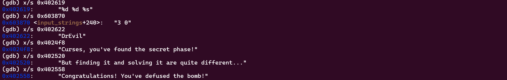
1 2 3 4 5 6 7 8 9 10 11 12 13 14 15 16 17 18 19 20 21 22 23 %rax = Mem[%fs + 0x28]; Mem[%rsp + 0x68] = %rax; if (Mem[%rip + 0x202181] == 6) { // num_input_strings %r8 = %rsp + 0x10; %rcx = %rsp + 0xc; %rdx = %rsp + 0x8; %rdi = 0x603870; sscanf(%rdi, "%d %d %s", %rdx, %rcx, %r8); if (%eax == 3) { %rdi = %rsp + 0x10; if (strings_not_equal(%rdi, "DrEvil") == 0) { puts("Curses, you've found the secret phase!"); puts("But finding it and solving it are quite different..."); %eax = 0; secret_phase(); } } puts("Congratulations! You've defused the bomb!"); } %rax = Mem[%rsp + 0x68]; if (%rax != Mem[%fs + 0x28]) { __stack_chk_fail(); }
仔细分析上述代码的逻辑，当输入的字符串个数等于 6 时，即解决了 phase_1 ~ phase_6 所有关卡后，程序调用 sscanf 从地址 0x603870 处读取以空格分隔的两个整数和一个字符串，分别存入寄存器 %rdx、%rcx 和 %r8 中，当函数返回值为 3，即成功匹配了 3 个值，且匹配到的第三个值（字符串）等于 \”DrEvil\” 时，即可进入隐藏关卡。
但是上面我们已经打印了地址 0x603870 处的字符串，为 3 0，只有两个，无法使得匹配数为 3. 我最开始想到的解决方法就是在调试过程中手动更改该地址处的值，但是这样的做法也只具备调试作用，进入隐藏关卡密码仍然无法得到。
换个角度来思考，这个 3 0 有没有可能不是硬编码的数据，而是我们手动输入的？记得之前 phase_4 的正确密码之一就是 3 0。
将断点设置在 phase_4 处，并打印 %rdi 寄存器的值， 发现正好就是 0x603870，因此 phase_4 的完整密码应该是 3 0 DrEvil （正如前面所说，前两位也可以是 1 0、7 0 等）。
注意末尾的 DrEvil 在 phase_4 中并不会被读取，因为模式字符串为 “%d %d”，因此匹配成功的值最多为 2，不会影响 cmp $0x2, %eax 的判断。
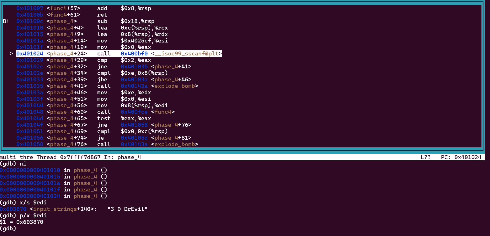
经过前面的准备，终于可以着手解决隐藏关卡了，相信有了前面这些关卡的锻炼，隐藏关卡不会显得太难。
1 2 3 4 5 6 7 8 9 10 11 12 13 14 15 16 17 18 19 20 21 22 0x0000000000401242 <+0>: push %rbx 0x0000000000401243 <+1>: call 0x40149e <read_line> 0x0000000000401248 <+6>: mov $0xa,%edx 0x000000000040124d <+11>: mov $0x0,%esi 0x0000000000401252 <+16>: mov %rax,%rdi 0x0000000000401255 <+19>: call 0x400bd0 <strtol@plt> 0x000000000040125a <+24>: mov %rax,%rbx 0x000000000040125d <+27>: lea -0x1(%rax),%eax 0x0000000000401260 <+30>: cmp $0x3e8,%eax 0x0000000000401265 <+35>: jbe 0x40126c <secret_phase+42> 0x0000000000401267 <+37>: call 0x40143a <explode_bomb> 0x000000000040126c <+42>: mov %ebx,%esi 0x000000000040126e <+44>: mov $0x6030f0,%edi 0x0000000000401273 <+49>: call 0x401204 <fun7> 0x0000000000401278 <+54>: cmp $0x2,%eax 0x000000000040127b <+57>: je 0x401282 <secret_phase+64> 0x000000000040127d <+59>: call 0x40143a <explode_bomb> 0x0000000000401282 <+64>: mov $0x402438,%edi 0x0000000000401287 <+69>: call 0x400b10 <puts@plt> 0x000000000040128c <+74>: call 0x4015c4 <phase_defused> 0x0000000000401291 <+79>: pop %rbx 0x0000000000401292 <+80>: ret
1 2 3 4 5 6 7 8 9 10 11 12 13 read_line(); strtol(%rax, 0, 0xa); %rbx = %rax; %eax = %rax - 1; if (%eax > 0x3e8) { // 无符号比较 explode_bomb(); } fun7(0x6030f0, %ebx); if (%eax != 2) { explode_bomb(); } puts(0x402438); phase_defused();
可以看到，隐藏关卡的代码逻辑还是比较清晰的：读取一行，应该是隐藏关卡的密码，将其转换为 long 类型，然后又是和之前类似的范围限定语句，随后调用函数 fun7，如果返回值为 2，则密码输入正确。
问题的关键还是在于函数 fun7，其代码如下：
1 2 3 4 5 6 7 8 9 10 11 12 13 14 15 16 17 18 19 20 0x0000000000401204 <+0>: sub $0x8,%rsp 0x0000000000401208 <+4>: test %rdi,%rdi 0x000000000040120b <+7>: je 0x401238 <fun7+52> 0x000000000040120d <+9>: mov (%rdi),%edx 0x000000000040120f <+11>: cmp %esi,%edx 0x0000000000401211 <+13>: jle 0x401220 <fun7+28> 0x0000000000401213 <+15>: mov 0x8(%rdi),%rdi 0x0000000000401217 <+19>: call 0x401204 <fun7> 0x000000000040121c <+24>: add %eax,%eax 0x000000000040121e <+26>: jmp 0x40123d <fun7+57> 0x0000000000401220 <+28>: mov $0x0,%eax 0x0000000000401225 <+33>: cmp %esi,%edx 0x0000000000401227 <+35>: je 0x40123d <fun7+57> 0x0000000000401229 <+37>: mov 0x10(%rdi),%rdi 0x000000000040122d <+41>: call 0x401204 <fun7> 0x0000000000401232 <+46>: lea 0x1(%rax,%rax,1),%eax 0x0000000000401236 <+50>: jmp 0x40123d <fun7+57> 0x0000000000401238 <+52>: mov $0xffffffff,%eax 0x000000000040123d <+57>: add $0x8,%rsp 0x0000000000401241 <+61>: ret
1 2 3 4 5 6 7 8 9 10 11 12 13 14 15 unsigned fun7 (unsigned x, unsigned y) { if (x == 0 ) { return 0xffffffff ; } int z = *x; if (z > y) { return 2 * fun7(*(x + 8 ), y); } else if (z == y) { return 0 ; } else { return 2 * fun7(*(x + 16 ), y) + 1 ; } }
又是一个递归函数，不过和 phase_4 不同，这个函数的代码显得很有规律，看到 *(x + 8) 和 *(x + 16) 这样的表达式很容易想到可能又是某种链接结构，不妨打印 0x6030f0 处的内容：
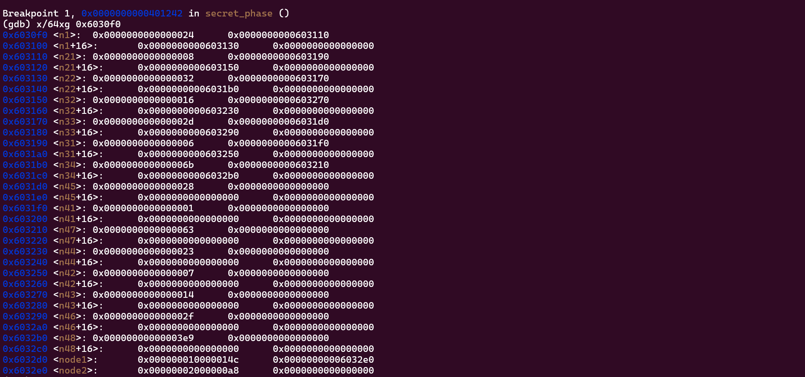
这下结果很明确了，每个结点包含两个链接（指针）域，没错，正是二叉树。为了分析的方便，我根据上图的数据内容绘制了一个等价的二叉树，如下图所示：
可以看到，每个结点由 4 个 8 字节组成，前三个应该分别是值域、左孩子、右孩子，最后一个全为 0 的 8 字节貌似很多余，个人推测应该是 C 语言结构体的 字节对齐 导致的。
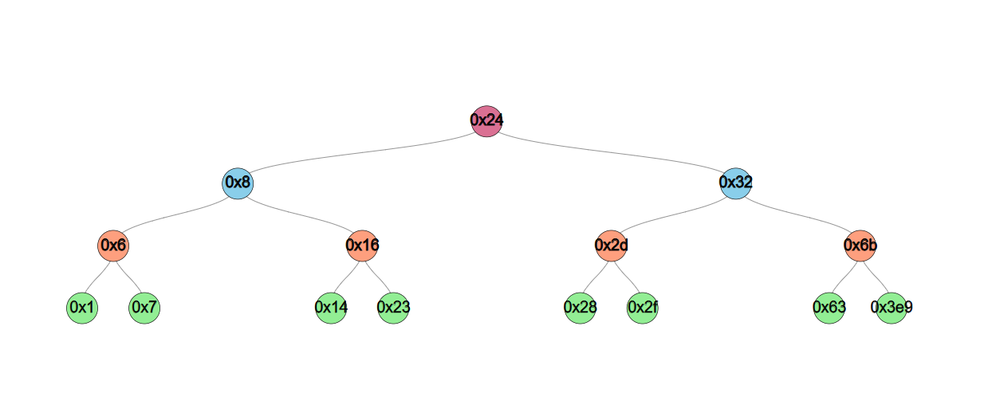
最后再回到函数 fun7 中，要使得最终结果等于 2，一种可能的计算方法如下：
我们只需要保证二叉树遍历时依次遍历左孩子、右孩子、左孩子，且输入密码正好等于叶子结点即可，0x14 正好就满足条件，因此隐藏关卡的密码为 20.
至此，”炸弹“ 成功被”拆除“。

 微信
微信 支付宝
支付宝